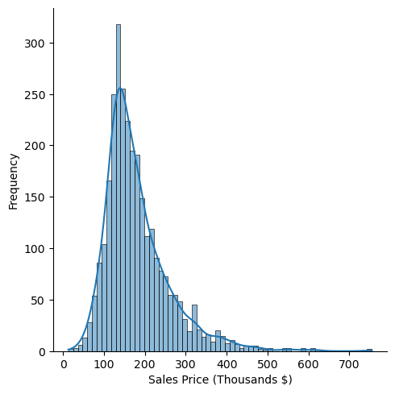
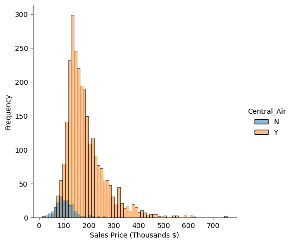
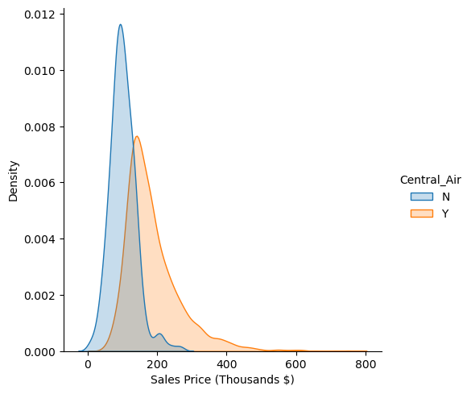
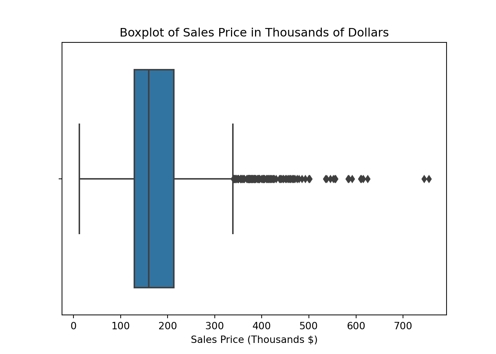
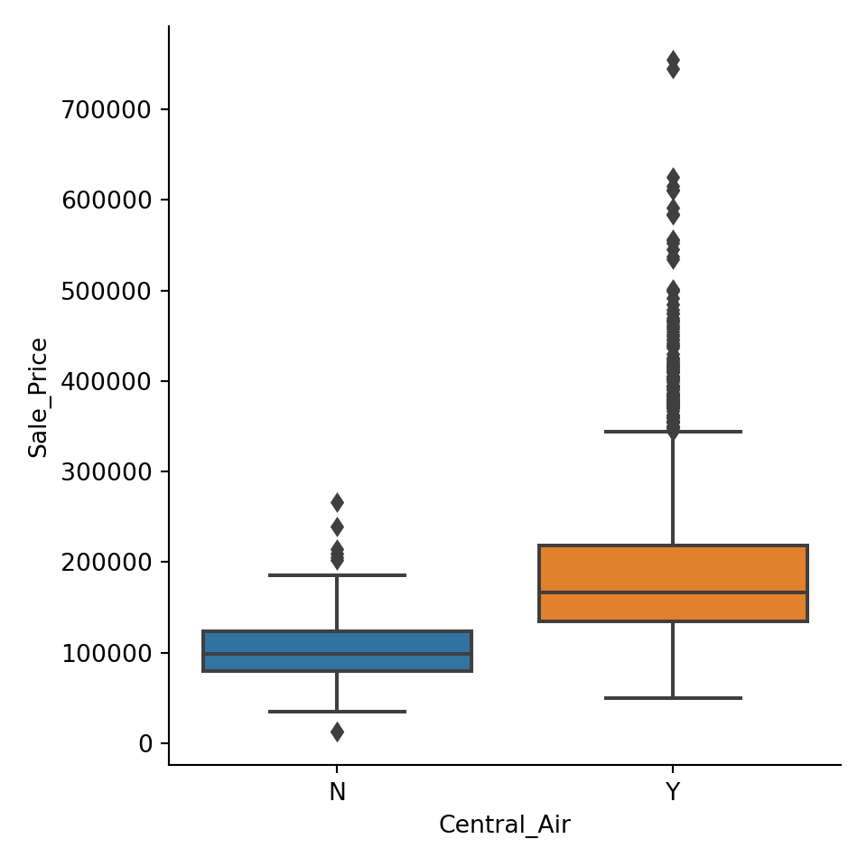

Code
library(AmesHousing)
library(reticulate)
use_condaenv("msa")
ames <- make_ordinal_ames()Yang Chen
September 1, 2023
What is each package used for?
pandas library is an open-source data manipulation and analysis library for the Python programming language. It provides data structures and functions that make it easier to work with structured data, such as tabular data (similar to spreadsheets and SQL tables). Pandas is widely used in data analysis, data cleaning, data transformation, and data visualization tasks.
numpy (Numerical Python) is an open-source Python library that provides support for large, multi-dimensional arrays and matrices, as well as a variety of mathematical functions to operate on these arrays. It is a fundamental library for numerical and scientific computing in Python and is widely used in various fields such as data analysis, machine learning, physics, engineering, and more.
numpy is useful for its “vectorized” operations which help create performant code for operations.
seaborn is an open-source Python data visualization library based on Matplotlib. It provides a higher-level interface for creating informative and attractive statistical graphics. Seaborn is particularly well-suited for creating complex visualizations that showcase relationships and patterns in data, making it a popular choice among data analysts, scientists, and data visualization enthusiasts.
matplotlib is a widely-used open-source data visualization library for the Python programming language. It provides a comprehensive set of tools for creating a variety of static, animated, and interactive visualizations in Python. Matplotlib is particularly popular among scientists, engineers, data analysts, and researchers for creating publication-quality visualizations.
matplotlib can be used in combination with seaborn to help adjust low-level graphical details.
statsmodels is an open-source Python library that focuses on statistical modeling and hypothesis testing. It provides a wide range of tools and classes for estimating and interpreting various statistical models. Statsmodels is particularly useful for statisticians, economists, social scientists, and researchers who need to perform rigorous statistical analysis and hypothesis testing on their data.
In particular, the summaries provided by statsmodels provides an R-like interface of useful tests and statistics that we would see executing similar code in R.
If you’re running the reticulate library in R you can run Python code in R. This also includes converting R objects into Python objects. For example, we can move R datasets to pandas dataframes:
# Use the generator version of setting the seed instead
rng = np.random.default_rng(1234)
x1 = np.repeat(["A", "B", "C"], 10)
x2 = np.repeat(["Z", "X", "Y", "W", "V", "U"], 5)
# Generate 30 values from different Normal distributions
y = np.concatenate(
[
rng.normal(loc=2.0, scale=1.0, size=10),
rng.normal(loc=1.0, scale=1.0, size=10),
rng.normal(loc=0.0, scale=1.0, size=10),
]
)
data = np.array([x1, x2, y]).T
column_names = ["x1", "x2", "y"]
df = pd.DataFrame(data=data, columns=column_names)
df.head() x1 x2 y
0 A Z 0.39616319460369853
1 A Z 2.064099914003764
2 A Z 2.7408912958767258
3 A Z 2.152619193565653
4 A Z 2.863743891323332You have to specify which columns should be one-hot encoded:
y x1_A x1_B x1_C ... x2_W x2_X x2_Y x2_Z
0 0.39616319460369853 True False False ... False False False True
1 2.064099914003764 True False False ... False False False True
2 2.7408912958767258 True False False ... False False False True
3 2.152619193565653 True False False ... False False False True
4 2.863743891323332 True False False ... False False False True
[5 rows x 10 columns]count 2930.000000
mean 180796.060068
std 79886.692357
min 12789.000000
25% 129500.000000
50% 160000.000000
75% 213500.000000
max 755000.000000
Name: Sale_Price, dtype: float64 count mean std ... 50% 75% max
Exter_Qual ...
Poor 0.0 NaN NaN ... NaN NaN NaN
Fair 35.0 89923.742857 38013.502946 ... 85000.0 115750.0 200000.0
Typical 1799.0 143373.968316 41503.853558 ... 139000.0 163000.0 415000.0
Good 989.0 230756.384226 70411.143067 ... 219500.0 267300.0 745000.0
Excellent 107.0 377918.616822 106987.707970 ... 370967.0 442520.5 755000.0
[5 rows x 8 columns]/opt/homebrew/Caskroom/miniconda/base/envs/msa/lib/python3.11/site-packages/seaborn/axisgrid.py:118: UserWarning: The figure layout has changed to tight
self._figure.tight_layout(*args, **kwargs)
Broken down my levels of a categorical variable:
/opt/homebrew/Caskroom/miniconda/base/envs/msa/lib/python3.11/site-packages/seaborn/axisgrid.py:118: UserWarning: The figure layout has changed to tight
self._figure.tight_layout(*args, **kwargs)
/opt/homebrew/Caskroom/miniconda/base/envs/msa/lib/python3.11/site-packages/seaborn/axisgrid.py:118: UserWarning: The figure layout has changed to tight
self._figure.tight_layout(*args, **kwargs)

/opt/homebrew/Caskroom/miniconda/base/envs/msa/lib/python3.11/site-packages/seaborn/axisgrid.py:118: UserWarning: The figure layout has changed to tight
self._figure.tight_layout(*args, **kwargs)
(1.8945491101378902, 0.058250572779629556, 2929.0)(1.8945491101378902, 0.029125286389814778, 2929.0)(1.8945491101378902, 0.9708747136101853, 2929.0)ttest_mean(self, value=0, alternative=“two-sided”)
ttest of Null hypothesis that mean is equal to value.
The alternative hypothesis H1 is defined by the following
| Type | Default | Details | |
|---|---|---|---|
| value | float or array |
0 | Hypothesized value for the mean |
| alternative | str |
two-sided | The alternative hypothesis, H1 |
# TODO: Create markdown documentation below function for better readability
def f_test(x, y):
"""F-test of Null hypothesis that variances are equal.
Calculates the F-test of two sample inputs by dividing their
variances. The function calculates a p-value based off the
F-distribution using x.size - 1 degrees of freedom and y.size - 1
degrees of freedom.
Parameters
__________
x : array_like
Array of input sample to be used in the numerator.
y : array_like
Array of input sample to be used in the denominator.
Returns
_______
f : float
Calculated F-statistic
p_value : float
P-value calculated from the F-distribution
"""
x = np.array(x)
y = np.array(y)
f = np.var(x, ddof=1) / np.var(y, ddof=1) # Calculates F-statistic
df_x = x.size - 1 # Degrees of freedom x
df_y = y.size - 1 # Degrees of freedom y
p_value = 1 - stats.f.cdf(f, df_x, df_y) # Calculate p-value of F-statistic
return f, p_value
f_test(ca_yes["Sale_Price"], ca_no["Sale_Price"])(4.4287439090727085, 1.1102230246251565e-16)